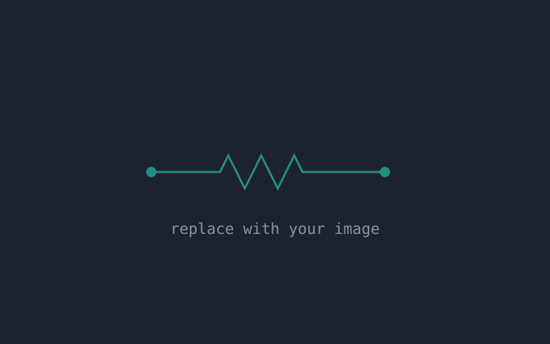

Yagi Antenna & RF Devices
A directional Yagi antenna for LoRa modules.

Overview
As an RF Design Engineer with IEEE, I co-engineered a Yagi antenna using LoRa modules.
My role
I worked on the design, matching, and testing of the antenna with a small team.
Design
I applied impedance matching and resonance tuning to maximize signal efficiency, so that as much power as possible reaches the antenna instead of reflecting back to the LoRa module.
Testing & iteration
We ran iterative RF tests as a team to refine performance, bringing the design from theory to working hardware.